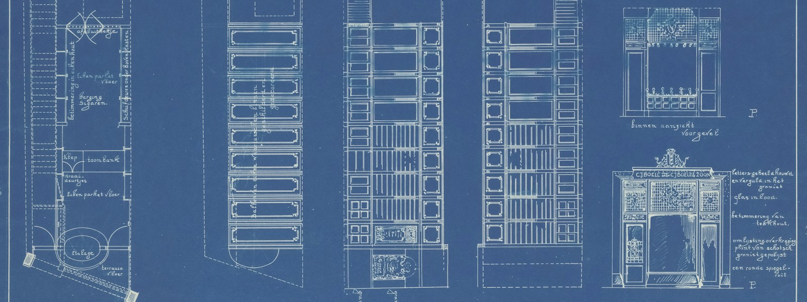

Lesson 05 · From repetition to a template
Blueprint Before You Template
Find the stable core and the true variation points before adding prompts.

Today's win
You'll turn a repeated project setup into a file-by-file plan: what to render, what to copy, what to ask, and when to split a variant into a separate template. Use the worked Go starter below, then repeat the same pass on a setup of your own.
Start with files, not variables
It is tempting to begin by inventing prompt fields. Instead, list the files that repeat in your starter, then ask what changes inside each file and whether users truly need to choose it.
| Example file | What varies? | Pavona treatment |
|---|---|---|
go.mod | module path / project slug | go.mod.tmpl with {{.project_name}} |
README.md | project name and one-line description | README.md.tmpl; use existing fields, don't ask twice |
LICENSE | nothing, if the same license text always applies | copy verbatim (no .tmpl) |
Taskfile.yaml | nothing, if tasks are standard across projects | copy verbatim; template only the parts that really vary |
cmd/, internal/ | directory layout stays stable | keep the directory names literal |
This keeps the prompt small: ask for a project name once, derive its other representations in files, and leave standard boilerplate alone.
Four decisions for each file
- Does the file belong in every generated project? If not, check whether the variation is truly a content choice or a different project shape.
- Is its content identical every time? Copy it verbatim.
- Does some content change predictably from an existing variable? Rename it
*.tmpland render the variable; avoid asking the user to repeat a derivable value. - Is there a small, real user decision? Add a choice/default to
config.cue, then render that value where needed.
Structural variants are the boundary. Pavona renders every file it walks; a
{{if}} in a file can change that file's contents, but it does not omit the file from
the generated tree. If two project types need substantially different file trees, give them two
focused templates instead of one template with a pretend file switch.
Your blueprint
Take one project setup you have repeated at least twice. List 5–10 files and fill this table in your notes—or reply with it when you're ready. You don't need to paste private source code; file names and descriptions of what varies are enough.
| File / directory | What changes between projects? | Copy / render / choice / split? |
|---|---|---|
| e.g. README.md | name and purpose | render from existing inputs |
At the end, count your proposed prompt variables. For each, finish this sentence: “The user needs to choose this because…” If the honest answer is “they don't,” use a fixed value or a sensible default instead.
Retrieval practice
Answer from memory before clicking. One attempt each.
1. A standard LICENSE file is identical for every project. What do you do?
2. A README needs the project name and description already collected. Best treatment?
.tmpl file and reference the existing data; don't prompt again for known values.3. Two project variants need substantially different file trees. What is the cleanest plan?
Primary sources to read
Compare the worked examples in exp/pavona/templates/
with the design doc's Template Directory Structure and
Hydration Algorithm. The examples show which files render and which are copied unchanged.
What's next
Next you'll make the blueprint robust: deliberately trigger a misspelled variable and trace which layer reports it, then practice recovering without clobbering good work.
Quick lookups: template cheat sheet · template review checklist · Lesson 4
Your teacher is here
Ask about any classification that feels debatable. If you share your blueprint (just paths and what changes), I'll help sharpen it before the failure-testing lesson.